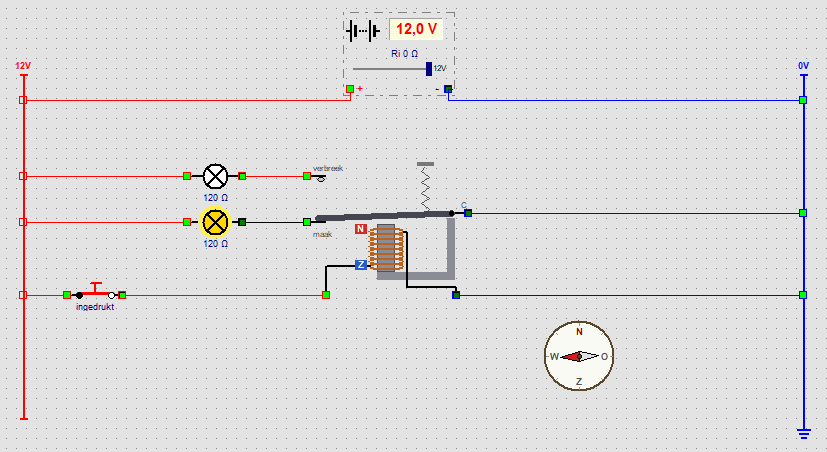

Learning path › Magnetism › Lesson 4 of 9 · Level: Extended
An electromagnet has two big advantages over an ordinary magnet: you can switch it on and off, and you can control its strength with the current. That is why they are everywhere:
A relay is a switch operated by an electromagnet. In the open model in Logic you see everything that is hidden inside a real relay:
When enough current flows through the coil (in Logic from 35 mA), the core becomes a magnet and pulls the armature. First the NC contact opens, then the NO contact closes. When the current stops, the spring pulls the armature back.
So a small current through the coil (the control circuit) switches a large current through the contacts (the load circuit). In a real relay the two circuits are electrically separate: a small 5 V signal can safely switch a lamp or a motor on 230 V.

What happens if you put the coil in series with its own NC contact?
So the armature vibrates back and forth by itself as long as the switch is closed. In a real bell a small hammer on the armature strikes a bell; in a buzzer a thin plate vibrates. This is called a Wagner hammer.
In lesson 11 you use the switching relay from the component toolbar, drawn with its circuit symbol. Inside it works exactly like this open model.
1. The coil has a resistance of 120 Ω and the armature moves from 35 mA. At which voltage of the source does the relay just pull in? Check it: set the source to 4 V and press the button, then to 5 V.
2. Suppose that in the bell you move the wire from the NC contact to the NO contact. What happens when you close the switch?
1. U = I × R = 0.035 A × 120 Ω = 4.2 V. At 4 V, 33 mA flows: too little, the armature stays put. At 5 V, 42 mA flows: the relay pulls in.
2. Nothing. At rest the NO contact is open, so no current flows through the coil and the armature is never pulled. A bell only works with the NC contact.